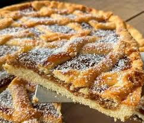

Pastafrola de dulce de leche y coco
ingredientes
- dulce de leche 500g
- manteca 200g
- harina leudante 400g
- azúcar 200g
- huevos 2
- coco rallado 50g
- escencia de vainilla
preparacion
batir la manteca pomada con el azúcar
agregar los huevos de a uno junto con la escencia de vainilla
incorporar la harina y formar una masa. dejar descansar media hora
estirar y colocar en un molde de tarta, rellenar con el dulce de leche mezclado con el coco
cocinar 20 minutos a 180 grados
